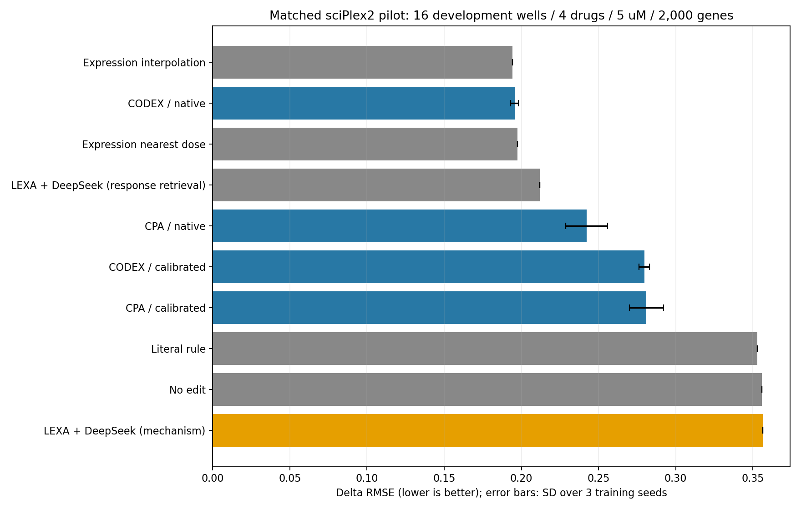
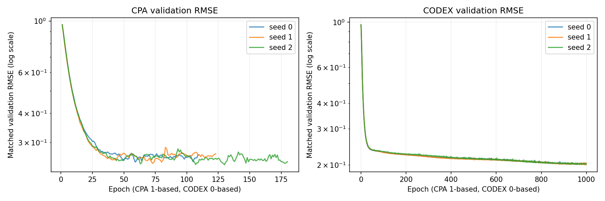

已验证结果：CODEX native ΔRMSE约0.195562±0.002547，CPA native约0.242347±0.013473。 简单表达剂量插值0.194145，CODEX未证明超过它；纯机制LEXA+DeepSeek约0.356299。 预先指定的calibrated变体CODEX约0.279644、CPA约0.280974，两者均劣于各自native。

| method | n_seeds | delta_rmse_mean | delta_rmse_std | delta_pearson_mean | absolute_r2_mean | delta_pearson_defined_wells_min | delta_pearson_defined_wells_max |
|---|---|---|---|---|---|---|---|
| Expression interpolation | 1 | 0.194145 | NaN | 0.760182 | 0.851228 | 16 | 16 |
| CODEX / native | 3 | 0.195562 | 0.002547 | 0.824924 | 0.834491 | 16 | 16 |
| Expression nearest dose | 1 | 0.197424 | NaN | 0.761393 | 0.849253 | 16 | 16 |
| LEXA + DeepSeek (response retrieval) | 1 | 0.212023 | NaN | 0.740271 | 0.823339 | 16 | 16 |
| CPA / native | 3 | 0.242347 | 0.013473 | 0.718262 | 0.733438 | 16 | 16 |
| CODEX / calibrated | 3 | 0.279644 | 0.003289 | 0.584695 | 0.690711 | 16 | 16 |
| CPA / calibrated | 3 | 0.280974 | 0.011027 | 0.567709 | 0.671525 | 16 | 16 |
| Literal rule | 1 | 0.352798 | NaN | 0.468036 | 0.482436 | 4 | 4 |
| No edit | 1 | 0.355724 | NaN | NaN | 0.477294 | 0 | 0 |
| LEXA + DeepSeek (mechanism) | 1 | 0.356299 | NaN | 0.178036 | 0.481237 | 15 | 15 |

同一原实验：四药BMS/Dex/Nutlin/SAHA，5µM/24h/A549，16孔、786处理细胞、951唯一对照、2000个训练来源基因。 CPA/CODEX为作者模型在本地数据协议下的适配，每种3个独立训练种子；旧LEXA/DeepSeek及简单参考沿用封存预测，n=1无种子标准差。 native：模型直接预测处理表达；calibrated：模型处理预测减同模型零剂量预测，再加真实对照均值。两种锚点预先指定并全部报告。 CODEX的calibrated零剂量预测经同药物网络分支计算，是补充诊断；该分支未专门以零剂量训练，不是作者标准的直接预测路径。 ΔRMSE逐孔计算后药内等权、四药等权；相关性只在有定义孔计算，需同时看有效孔数；absolute R²是基因维度1-SSE/SST。 CPA/CODEX训练可见其他剂量真实响应；纯机制主方法推理使用机制与code语义，无响应检索。比较说明相同测试集下表现，差异不能全部归因于架构或语言模型。 此5µM数据已经用于前期开发，不是新的独立泛化测试；不是论文/公开榜单原协议的复现分数。 CODEX三次均达到预设1000epoch上限，seed1最佳在最后一轮，不能声称完全收敛；CPA由验证早停结束。 表达插值/响应检索属于响应监督参考；no-edit与文字规则为辅助基线。本轮没有新DeepSeek调用。 图中误差条为3个训练种子的sample SD，不是细胞或生物学置信区间。